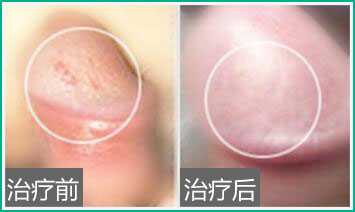

Dear healthy male friends, if you have the above symptoms, it means that you are already a patient of balanitis. It needs to be treated as soon as possible, because the disease looks small, but it is actually very harmful to human health. If it is not treated in time, it will cause major damage to your health.
—— Four major hazards of balanitis ——
1. Harm the health of male reproductive system
2. Cause urinary system infection
3. Sexual dysfunction diseases such as premature ejaculation
4. Impairment of sperm quality and fertility
NO1.acute superficial balanitis
NO2.annular ulcerative balanitis
NO3.Plasma cell balanitis
NO4.candidal balanitis
NO5.amoebic balanitis
NO6.Trichomonal balanitis
I don't know what kind of balanitis I have? Please consult online
If you want to cure balanitis, you must pay attention to the subjective aspect of the patient! At present, there are many misunderstandings in the treatment of balanitis, but the biggest impact is the lack of awareness, subjective neglect, failure to go to regular male hospitals for systematic treatment, leading to deterioration of the condition, and at the same time losing valuable opportunities to see a doctor.
Contact China Great Wall Health Center Now
China Great Wall Health Center is a modern professional andrology health center approved and registered by Health Bureau. It has been focusing on men's health. It is the first modern advanced medical care in established in accordance with the principle of "specialized treatment" to provide health services for men. mechanism. The hospital has 15 refined treatment specialties, focusing on the prevention and treatment of various andrological diseases, and is the best choice for patients to treat andrological diseases.
— A new generation of CRS strong permeable membrane technology —
The preferred technology for the treatment of balanitis in developed countries
A revolution in the history of human balanitis treatment
Popular all over the world, 1300 men's hospitals mainly recommend it
1. Deep hyperthermia:Using a high-power megawave host to perform non-contact deep hyperthermia on lesions, the powerful high-frequency energy can directly reach the inside of the human body to sterilize and reduce inflammation and kill pathogens.
2. Reduce swelling and relieve pain: While sterilizing, blood circulation is enhanced, the adhesion tissue of the affected area is loosened, and pain relief and swelling are effectively relieved. Generally, the effect can be seen after only one treatment。
3. Promote drug efficacy: Use heat to promote better diffusion of drug molecules and give full play to their therapeutic effects.

Day 1
Most of the pathogens on the surface of the glans are killed, and the itching and pain sensation are greatly reduced【click for inqueries】
day 2
Most of the pathogens in the subcutaneous tissue of the glans are killed, and the glans ulcer begins to heal【click for inqueries】
Day 3
The area of the ulcer shrinks to the size of a grain of rice, the exudate basically disappears, and the epidermis begins to scab【click for inqueries】
day 4
The inflammation basically recovered, the red spots and pustules on the surface of the glans disappeared completely, and the itching was relieved【click for inqueries】
day 5
The inflammation of the glans is completely eradicated, and the skin on the surface of the glans is smooth and tender, giving it a new look【click for inqueries】
day 6
Fully recovered you can do "what you love to do"【click for inqueries】
Can I have sex with balanitis?
How many days does it take to treat balanitis?
Where is China Great Wall Health Center ? How many buses do you take?
Don't want to queue? Online registration can skip the line